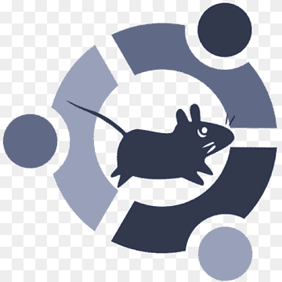

Xfce
Xfce is a lightweight desktop environment for UNIX-like operating systems. It aims to be fast and low on system resources, while still being visually appealing and user friendly. Xfce embodies the traditional UNIX philosophy of modularity and re-usability. It consists of a number of components that provide the full functionality one can expect of a modern desktop environment. They are packaged separately and you can pick among the available packages to create the optimal personal working environment. Another priority of Xfce is adherence to standards, specifically those defined at freedesktop.org.

Web site : https://xfce.org/
Download link: https://xfce.org/download
Q4OS
Q4OS is a Debian-based desktop Linux distribution designed to offer classic-style user interface and simple accessories, and to serve stable APIs for complex third-party applications, such as Google Chrome, VirtualBox and development tools. The system is also very useful for virtual cloud environments due to its very low hardware requirements.
Web Site: https://q4os.org/
Download Link: https://q4os.org/downloads1.html
Slax
Slax is a modern, portable, small and fast Linux operating system with modular approach and outstanding design. It runs directly from your USB flash drive without installing, so you can carry it everywhere you go in your pocket. Despite its small size, Slax provides nice graphical user interface and wise selection of pre-installed
Web Site: https://www.slax.org/
Download Link: https://www.slax.org/#purchase
Ubuntu MATE
Ubuntu MATE is free and open source software and the official Ubuntu distribution variant. Using the MATE desktop environment known as the successor to the GNOME 2 desktop environment Ubuntu MATE; It is developed by volunteer developers and designers led by Martin Wimpress and Alan Pope. Version 20.04.1 LTS uses the latest version 1.24.0 of the mate desktop environment.
Web site :https://ubuntu-mate.org/
Download link: https://ubuntu-mate.org/download/
Zorin OS Lite
Zorin OS is a personal computer operating system designed and supported for users new to Linux-based computers. One of its built-in features is that it allows users to change the interface to resemble the interfaces of Microsoft Windows or MacOS. Wine and PlayOnLinux can be installed on Zorin OS. It allows users to run Windows software for ease of transition and play. There are three free versions of the operating system and an "Ultimate" version available for purchase.

Xubuntu
Ubuntu is a really lightweight linux distro. You know what? there is a version that is even more lightweight. Xubuntu! Xubuntu is one of the official flavors of Ubuntu that features the lightweight Xfce desktop. You will find it easy to use and can also install it on your older computers with no issues. Head to their official website to download the ISO (32-bit/64-bit) you need and get started
Web site : :https://xubuntu.org/
Download link: https://xubuntu.org/download
Linux Mint Xface
While being an Ubuntu-based distro, it also features the Xfce desktop which makes it good enough for some old computers.
Web site: https://www.linuxmint.com
Download link: https://www.linuxmint.com/download.php
Peppermint
Peppermint OS is a Linux OS based on Lubuntu, which itself is a derivative of the Ubuntu Linux operating system that uses the LXDE desktop environment. It aims to provide a familiar environment for newcomers to Linux, which requires relatively low hardware resources to run.
web site: https://peppermintos.com/
Download Link : https://peppermintos.com/guide/downloading/
Linux Lite
Linux Lite is a Linux distribution, based on Debian and Ubuntu and created by a team led by Jerry Bezencon. The distribution offers a lightweight desktop experience with a customized Xfce desktop environment. It includes a set of Lite applications to make things easier for a novice Linux user. Linux Lite was created to make the transition from MS Windows to a Linux-based operating system as smooth as possible (especially to users of no-longer supported versions). Linux Lite follows the Unix philosophy in regards to software selection and programming as it applies to the modern era - Write programs that do one thing and do it well.
Website:https://www.linuxliteos.com/index.html
Download link:https://www.linuxliteos.com/download.php
LXLE
LXLE is a Linux distribution based upon the most recent Ubuntu/Lubuntu LTS release, using the LXDE desktop environment. LXLE is a lightweight distro, with a focus on visual aesthetics, that works well on both old and new hardware.
Website:https://lxle.net/
Download:https://www.lxle.net/download/
CrunchBang++
Crunchbang++ is the clone of Crunchbang Linux which has been discontinued. CrunchBang++ supports old computers and runs without any issue. CrunchBang++ is based on Debian 10 with the minimal design interface. Some of the default applications in Crunchbang++ at the time of writing this were Geany IDE, Terminator terminal emulator, Thunar File Manager, Gimp for image editing, Viewnior image viewer, VLC Media Player for music, Xfburn CD/DVD burning software, and so on.

Crunchbang++ Official Site: https://crunchbangplusplus.org/
Download link: https://crunchbangplusplus.org/oldindex.html#download
Bodhi Linux
Yet another light Linux distribution – Bodhi Linux, that gives life to older PCs & Laptops. Bodhi Linux is quite known for its minimal approach and the support for low-end hardware. It doesn’t feature a lot of things pre-installed – hence, you will notice that the ISO file size will be less than 1 GB. The presence of Moksh Desktop makes Bodhi Linux is a decent choice for older hardware configurations while providing a good user experience.

Bodhi Linux Official Site: http://www.bodhilinux.com/
Download link: https://www.bodhilinux.com/download/
antiX Linux
antiX also uses icewm window manager to keep the system running on low-end hardware. It doesn’t have much pre-installed software so the ISO file size is around 700 MB. You can always download and install more software later if you have access to an active internet connection.

Website:https://antixlinux.com/
Download link: https://antixlinux.com/download/
SparkyLinux
SparkyLinux is another lightweight distro but at the same time, it also targets modern computers. Depending on what you need – you will find two variants of SparkyLinux. One based on Debian’s stable release and the other based on Debian’s testing branch. So, you can opt for anyone you see fit. In addition to the variants, you will also find different editions of ISO to download. For instance, an LXQT desktop-based edition, a GameOver edition with pre-installed stuff, and so on. You can head down to their download page and click on “Stable” or “(Semi-)Rolling” releases to find all the editions listed.
Website: https://sparkylinux.org/
Download link: https://sparkylinux.org/download/
BunsenLabs
Briefly: A distro that's carrying the Crunchbang torch onwards Crunchbang (or #!) was a very popular Debian-derived distro specifically designed to use as few system resources as possible. While it was discontinued in 2013, the community fondly remembered its lightning speed and responded with two Crunchbang-based distros to continue its legacy. However, one of those successors, Crunchbang++, has now been discontinued. BunsenLabs is still active, though, and its current release (Lithium) is based on the latest stable version of Debian featuring a gorgeously configured Openbox window manager and its own repository of core packages. The distro ships with an assortment of themes and wallpapers, and includes a number of everyday desktop apps to provide a very usable out-of-the-box experience. BunsenLabs is available for both 32-bit and 64-bit machines, and the developers recommend running the distro on a machine with more than 2 GB of RAM.
Web Site: https://www.bunsenlabs.org/
Download link: https://www.bunsenlabs.org/installation.html
Puppy Linux
Puppy Linux can be booted live with either a CD/DVD/USB. Puppy Linux uses JWM and Openbox window managers by default which makes it very easy on system resources. Because Puppy Linux is built to be fast, it does not come along with bundles of applications. It does have some basic apps, though. In other words, it can get your work done if you want to utilize a really old computer.
Web site: http://puppylinux.org/
Download link: https://distro.ibiblio.org/puppylinux/puppy-bionic/
Tiny Core
Probably, technically, the most lightweight distro there is. However, it isn’t a complete Linux distribution for an average desktop user. Tiny Core simply incorporates the fundamental core of an OS which includes the kernel and the root filesystem. In other words, it features the foundation of a desktop OS. If you simply want a system to boot up coupled with a wired Internet connection, you can get started using it. But, you should not expect proper hardware support out of the box. So, if you’re someone who knows how to set up or compile tools necessary with Tiny Core Linux to make it a complete desktop experience, you can give it a try.
Web site: http://tinycorelinux.net/welcome.html
Download link: http://tinycorelinux.net/downloads.html
DSL
Damn Small Linux (DSL) is a computer operating system for the x86 family of personal computers. It is free and open-source software under the terms of the GNU GPL and other free and open source licenses. It was designed to run graphical user interface applications on older PC hardware, for example, machines with 486 and early Pentium microprocessors and very little random-access memory (RAM). DSL is a Live CD with a size of 50 megabytes (MB).

Web Sites: http://www.damnsmalllinux.org/
Download: http://sourceforge.net/projects/archiveos/files/d/dsl/dsl-4.11.rc2.iso/download
Archbang Linux
ArchBang Linux is a simple, lightweight, rolling Linux distribution based on a minimal Arch Linux operating system with an i3 window manager, but previously it used the Openbox window manager. ArchBang is particularly suitable for high performance on legacy or low-end hardware with limited resources. ArchBang's goal is to provide a simple out-of-the-box Arch-based Linux distribution with a pre-configured Openbox desktop package adhering to Arch principles. ArchBang has also been recommended as a quick install method for people who have experience installing Arch Linux but want to avoid the more demanding default Arch Linux installation when reinstalling it on another computer.
Web sites: https://archbang.org/
Download: https://sourceforge.net/projects/archbang/
Elive Linux
Elive is a Linux distribution based on Debian 10 Buster both for legacy (old) and new hardware.Elive uses the desktop environment Enlightenment. Elive has access to online repositories of Debian (Buster for beta, Wheezy for old stable) and uses its own repositories with more than 2500 packages that includes own specific software for Elive, extra software, or packages that replaces the default ones provided by Debian, improving the overall system and integrity. Elive comes with a complete set of included software to fit any needs for example free programs as: LibreOffice, Chromium, Firefox, Thunderbird, VLC media player, GIMP, Inkscape, Blender, Skype, Virtual box, Shotwell.
Web sites: https://www.elivecd.org/
Download: https://www.elivecd.org/download/
Porteus
Porteus (formerly Slax Remix) is a portable operating system based on Slackware. It does not require installation and can be run from fixed and removable media, such as a USB flash drive or compact disc. Porteus is a small (under 300MB) portable linux distribution based on Slackware linux and a heavily modified version of the linux-live scripts. It is modular in design, meaning programs (or collections of programs) can be installed and removed simply by double clicking on module files. Unlike other Linux distributions that have a 'live CD' option, or can be shoehorned onto a flash drive, Porteus is designed and optimized to run from a USB flash drive, flash card or CD. It can also be installed in it's compressed form to an external or internal hard disk (AKA a 'frugal' install). With it's small footprint, modest system requirements, wifi support and modern kernel, Porteus is also ideally suited to run on netbooks.
Web Sites: http://www.porteus.org/
Download: http://porteus.org/download
SliTaz GNU/LİNUX
SliTaz GNU/Linux is a lightweight Linux distribution, community-based, suitable for use on older hardware and as a Live CD or Live USB.SliTaz stands for "Simple, Light, Incredible, Temporary Autonomous Zone" according to the boot screen. SliTaz uses the Openbox window manager. Additional packages are added using a program called "TazPanel". This is due to the specific package format that SliTaz uses (tazpkg). It can still use packages from the more popular distribution though, as Debian, by means of first carrying out a conversion of these different packages By default, SliTaz offers no persistence, however it can still be added if the user wishes. The choice of the filesystem/bootloader used with slitaz is then of importance however; persistence being only available with ext2 and ext3 filesystems and the syslinux or extlinux boot loader. Another useful tool is TazLiTo, with which users can create their own LiveCD based on selected packages or even based upon the current system state.

Web Sites: https://www.slitaz.org/en/
Download: https://www.slitaz.org/en/
LXDE
The "Lightweight X11 Desktop Environment" is an extremely fast-performing and energy-saving desktop environment. Maintained by an international community of developers, it comes with a beautiful interface, multi-language support, standard keyboard short cuts and additional features like tabbed file browsing. LXDE uses less CPU and less RAM than other environments. It is especially designed for cloud computers with low hardware specifications, such as, netbooks, mobile devices (e.g. MIDs) or older computers. LXDE can be installed with distributions like Ubuntu or Debian. It provides a fast desktop experience; connecting easily with applications in the cloud. LXDE supports a wealth of programs that can be installed locally with Linux systems. The source code of LXDE is licensed partly under the terms of the the General Public License and partly under the LGPL.
Web site : http://www.lxde.org/
Download link: http://www.lxde.org/get/
Lubuntu
Lubuntu is a fast and lightweight operating system with a clean and easy-to-use user interface. It is a Linux system, that uses the minimal desktop LXDE/LXQT, and a selection of light applications. Because of this, Lubuntu has very low hardware requirements. Lubuntu was founded by Mario Behling and has been grown for many years by Julien Lavergne. Lubuntu originally used the LXDE desktop, but moved to the LXQt desktop with the release of Lubuntu 18.10 in October 2018, due to the slow development of LXDE, losing support for GTK 2 as well as the more active and stable LXQt development without Gnome dependencies. The LXDE desktop was first made available for Ubuntu in October 2008, with the release of Ubuntu 8.10 Intrepid Ibex. These early versions of Lubuntu, including 8.10, 9.04 and 9.10, were not available as separate ISO image downloads, and could only be installed on Ubuntu as separate lubuntu-desktop packages from the Ubuntu repositories. LXDE can also be retroactively installed in earlier Ubuntu versions.
Web site: https://lubuntu.net/
Download Link : http://cdimage.ubuntu.com/lubuntu/releases/18.04/release/lubuntu-18.04-alternate-i386.iso http://cdimage.ubuntu.com/lubuntu/releases/19.10/release/lubuntu-19.10-desktop-amd64.iso